Overall Framework
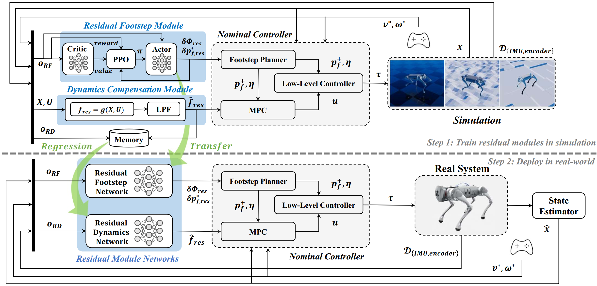
This paper presents a novel approach that combines the advantages of both model-based and learning-based frameworks to achieve robust locomotion. The residual modules are integrated with each corresponding part of the model-based framework, a footstep planner and dynamic model designed using heuristics, to complement performance degradation caused by a model mismatch. By utilizing a modular structure and selecting the appropriate learning-based method for each residual module, our framework demonstrates improved control performance in environments with high uncertainty, while also achieving higher learning efficiency compared to baseline methods. Moreover, we observed that our proposed methodology not only enhances control performance but also provides additional benefits, such as making nominal controllers more robust to parameter tuning. To investigate the feasibility of our framework, we demonstrated residual modules combined with model predictive control in a real quadrupedal robot. Despite uncertainties beyond the simulation, the robot successfully maintains balance and tracks the commanded velocity.

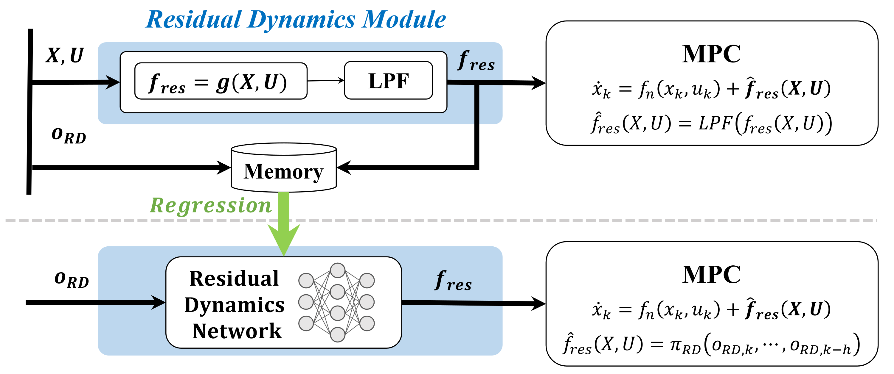
The LPF smooths the residual dynamics, preventing high-frequency noise from destabilizing the controller. The supervised learning (SL)-based module learns a mapping from the proprioceptive information to the residual dynamics, providing a more stable compensation for model mismatch.
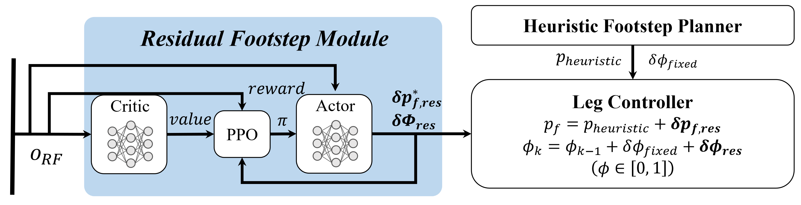
A reinforcement-learning residual adjusts high-level nominal references (e.g., foothold and gait-phase references) to improve task performance and robustness.
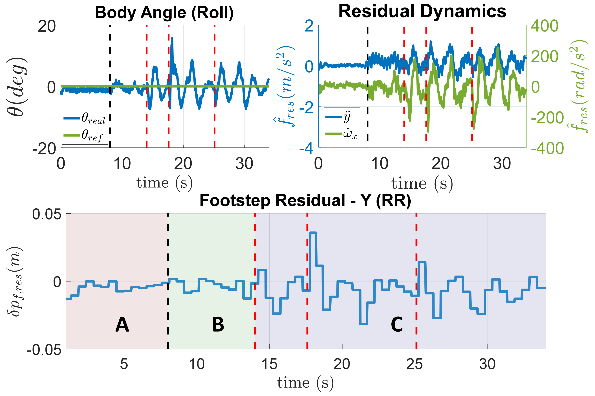
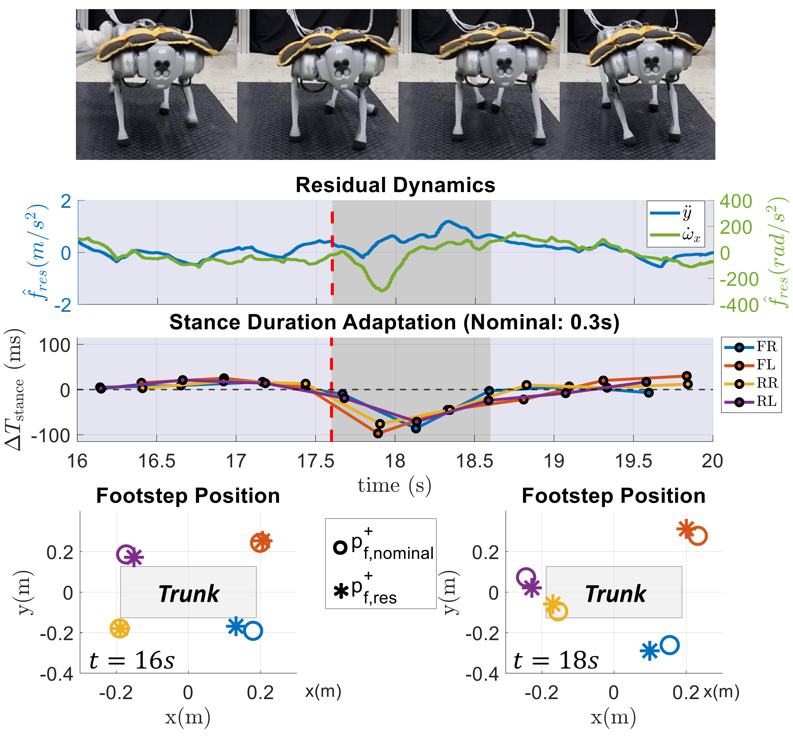
With a 6kg off-center payload and external pushes, the nominal controller cannot rely on its fixed model and heuristic contacts alone. The residual dynamics module reacts to the induced model mismatch, while the residual planner changes foothold timing and lateral placement, allowing the robot to recover balance under combined uncertainty.
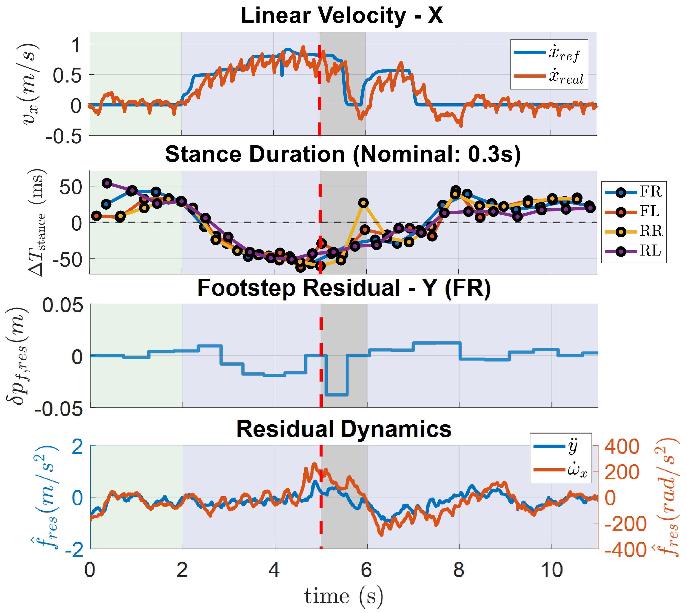
From in-place stepping to acceleration, the residual planner shortens the gait phase duration, showing faster step transitions for high-speed locomotion. When the robot receives a lateral disturbance during acceleration, the gait sequence changes for recovery, the footstep residual shifts the foothold in the disturbance direction, and the residual dynamics captures the posture deviation induced by the disturbance.
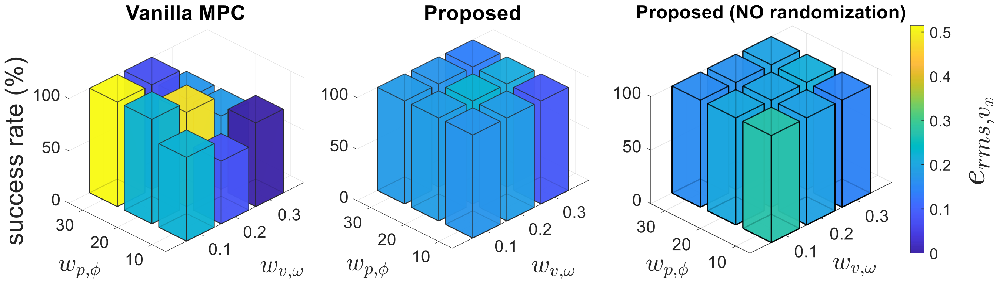
MPC performance is strongly affected by cost-function weights, which are usually tuned by hand. Across varied position and velocity weight settings, the residual-augmented controller maintains more consistent success rates and tracking errors, showing that the learned modules can reduce sensitivity to imperfect nominal parameter choices.
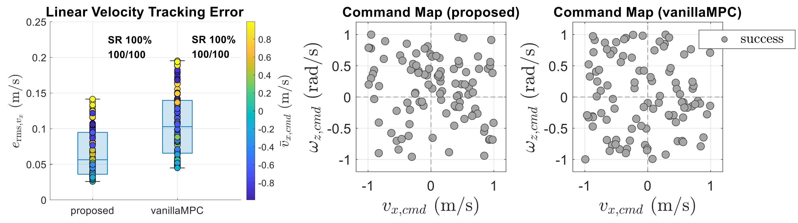
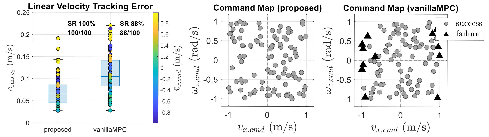
Across 100 command trials, the proposed controller improves tracking consistency beyond simply avoiding failure. On flat terrain, both controllers succeed, but the residual modules reduce the spread of velocity-tracking errors; on rough terrain, the proposed controller keeps robust tracking where vanilla MPC becomes unreliable at more demanding commands.
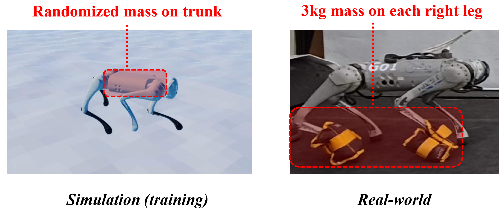
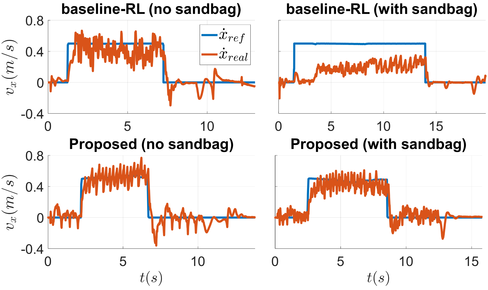
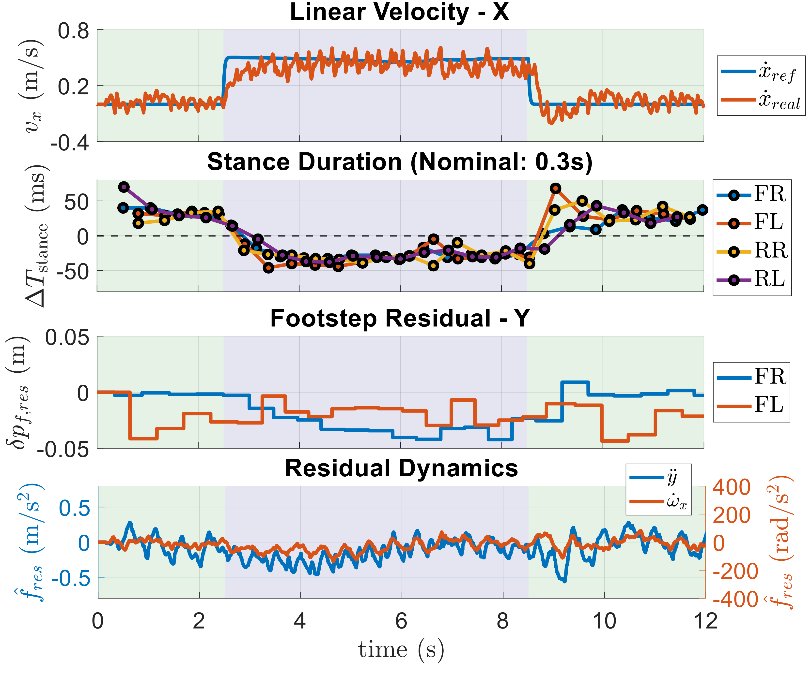
The asymmetric leg-mounted payload is outside the training distribution, where an end-to-end RL baseline loses tracking performance. The model-based backbone preserves consistent behavior, and the residual modules add physically meaningful adaptations in dynamics compensation, gait timing, and foothold placement toward the payload-induced imbalance.
@article{11091478,
author={Kim, Min-Gyu and Kang, Dongyun and Kim, Hajun and Park, Hae-Won},
journal={IEEE Robotics and Automation Letters},
title={A Modular Residual Learning Framework to Enhance Model-Based Approach for Robust Locomotion},
year={2025},
volume={10},
number={9},
pages={9072-9079},
keywords={Uncertainty;Training;Robots;Legged locomotion;Adaptation models;Vehicle dynamics;Degradation;Computational modeling;Payloads;Computational efficiency;Legged robots;machine learning for robot control;optimization and optimal control},
doi={10.1109/LRA.2025.3592067}
}